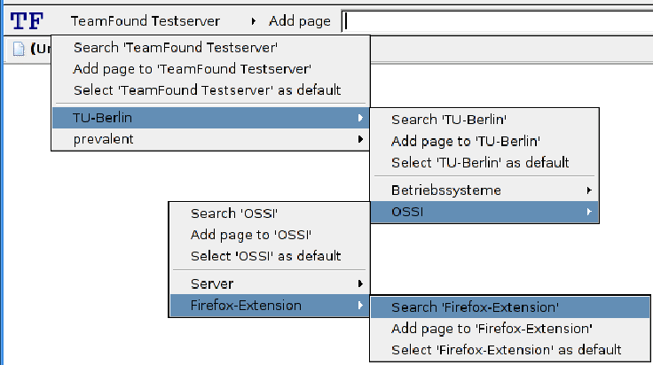

Firefox-Toolbar
Der Mozilla Firefox lässt sich durch sogenannte Extensions sehr einfach erweitern. Als grundlegende Techniken werden dafür XUL (XML User Interface Language) und Javascript benötigt. Desweiteren gibt es eine exakt vordefinierte Verzeichnisstruktur sowie eine Beschreibungs-Datei (install.rdf) im RDF (Resource Description Framework) Format, umd die Erweiterung automatisiert installierbar in Firefox-Browsern zu machen.
Abbildung 4.2:
Firefox-Toolbar mit Kategorien-Baum (v0.8, Milestone 2)
|  |
Unterabschnitte
Jan Kechel
2006-04-28